佐賀の食と器の可能性を探る、交流地。
SAGA
SAGA
MARIAGE
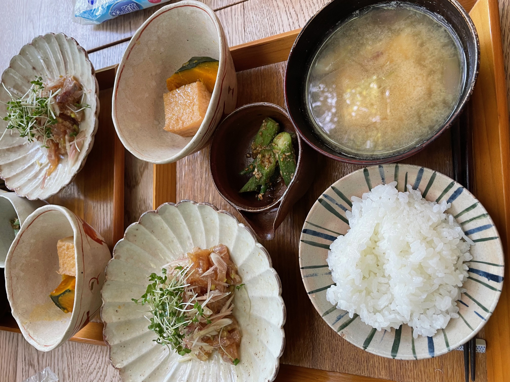
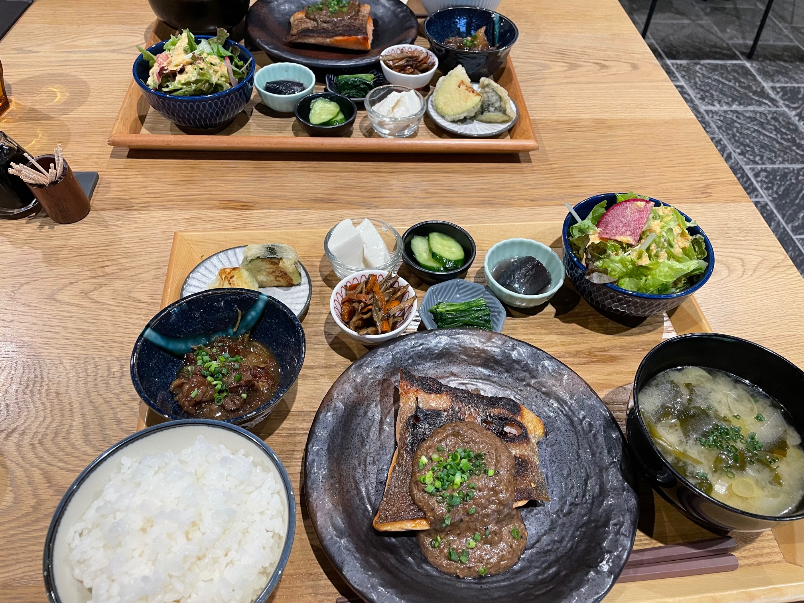
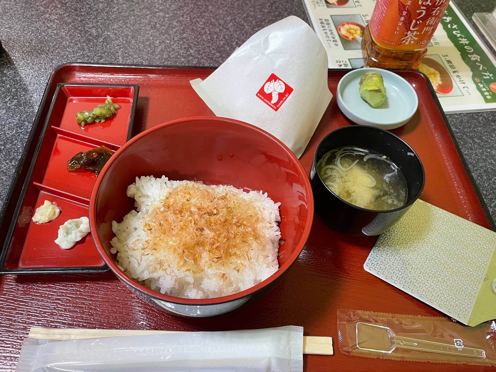
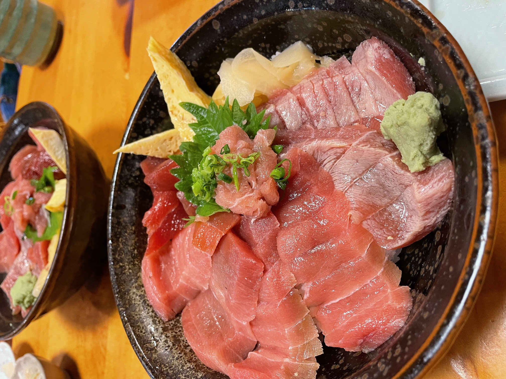
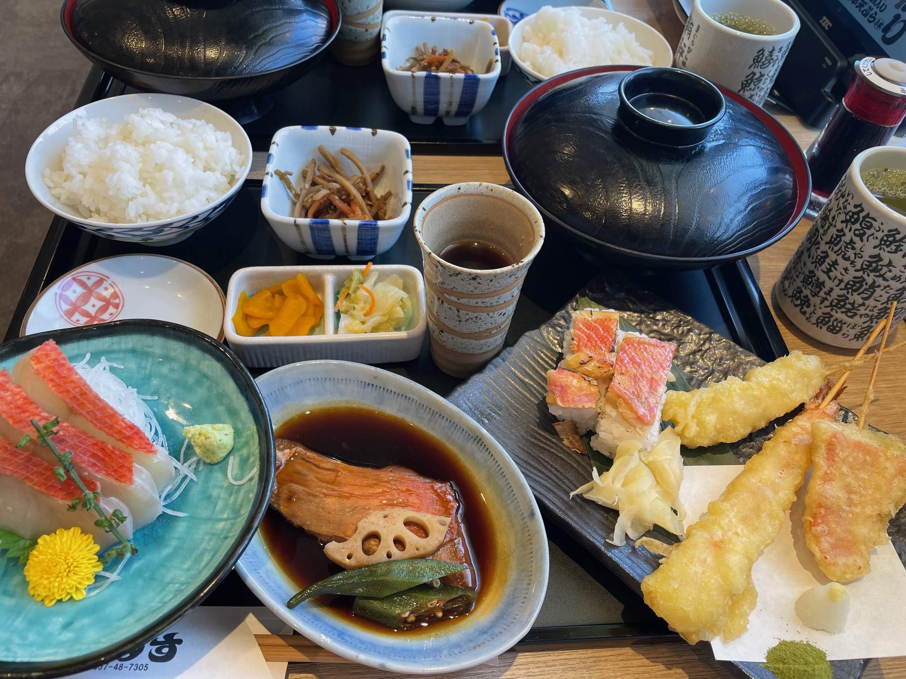
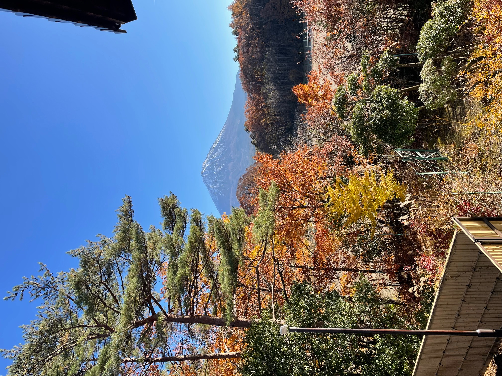
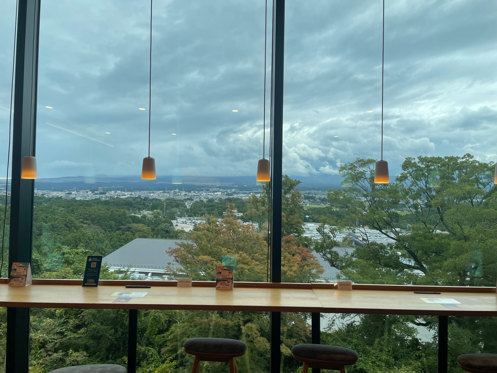
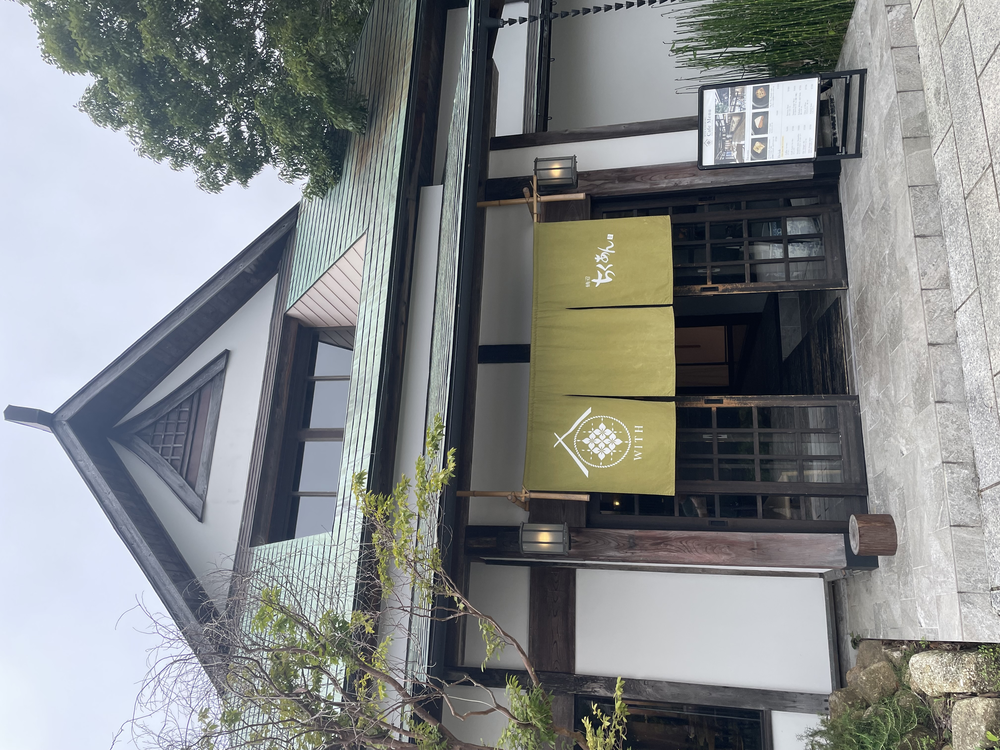
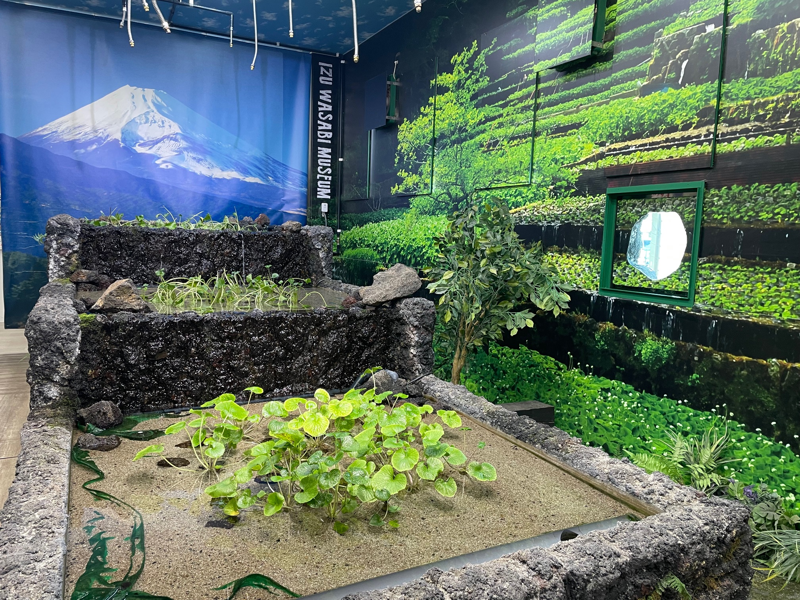
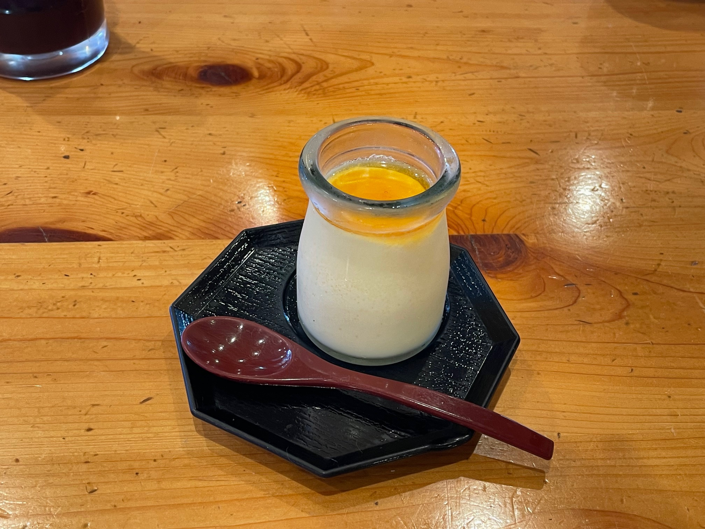
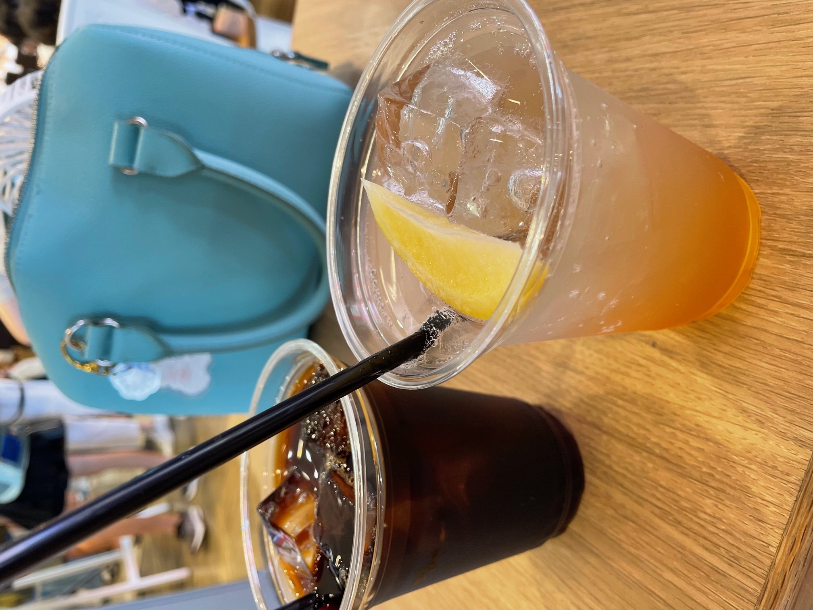
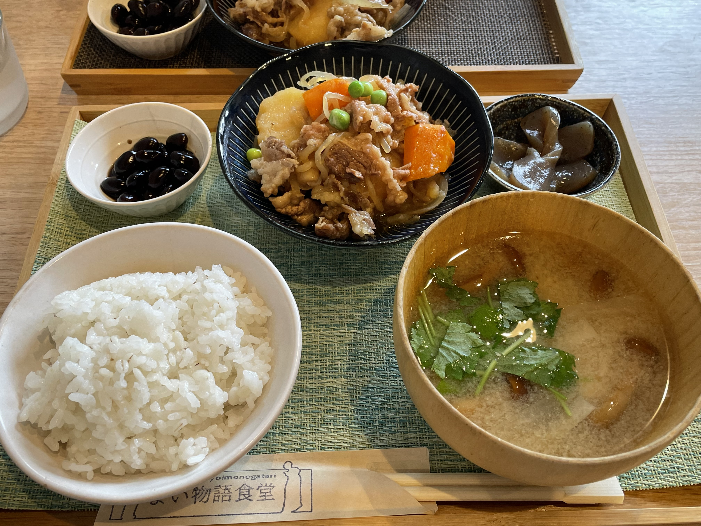
TOPICS
&
EVENT
2025.12.05
人を育て、人が繋ぐ。行方ひさこが佐賀で感じた伝統の進化と継承／陶芸家 渡邊心平さん編
佐賀旅、第二回目は砥部焼という焼きものの町出身ながら、伊万里...
2025.11.07人を育て、人が繋ぐ。行方ひさこが佐賀で感じた伝統の進化と継承／「唐津 松の井旅館」料理長 森次庸介さん編
器の世界に惹かれたきっかけは、幼少期に出会った祖父母が唐津旅...
2025.03.22USEUM SAGA vol.06
第6弾の舞台となったのは、2025年に新市誕生20年を迎えた...
2025.02.10レジデンス No.4
シェフ・イン・レジデンス第4弾では、東京・六本木のインド料理...
2025.11.14希少フルーツ栽培のパイオニア、唐津「富田農園」が農家魂をかけてチャレンジし続ける理由
「俺には悪か癖のあるとさ。とにかく“１番”じゃないと気が済ま...
2025.11.13トークセッションアーカイブ動画公開のお知らせ
10月18日（土）、19日（日）の2日間に渡って開催した「S...
concept
サガマリアージュ
サガマリアージュ
佐賀の食と器の
可能性を探る、
交流地。
出会いがなければ、最高の一皿は生まれない。
料理人は一皿をつくるために、様々なつながりを持っている。
どんな食材を使うか。
どんな味の組み合わせにするか。
どんな器で表現するのか。
どんな食彩を描くのか。
ひとつひとつの決断は、人との出会いから生まれている。
だからこそ、私たちは食の出会いが生まれる場をつくりたい。
料理人が新たな出会いを活かし、可能性を探求することで
一皿に物語が生まれ、今までにないものができるはずだ。
出会いから、世界が注目する食文化を育てよう。
about
佐賀県の有益な資源である「食材」と「器」を「料理人」の感性で磨き上げながら、料理という一皿の上に佐賀の可能性を表現・発信していくことで、新たな価値を創造する取組。
View More
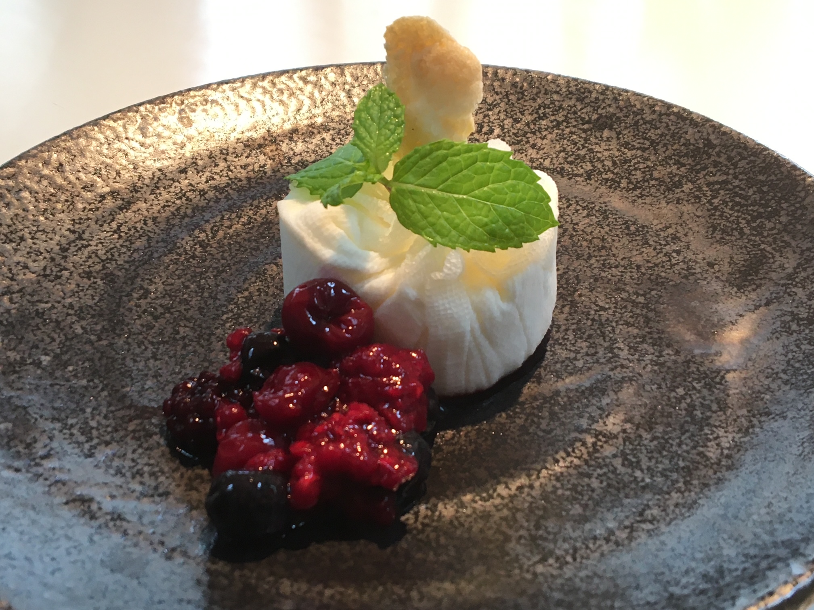
history
有田焼創業400年事業や肥前さが幕末維新博覧会、アジアベストレストラン50など、食と器をコンセプトにしたプロジェクトのこれまでの歩み。
View More
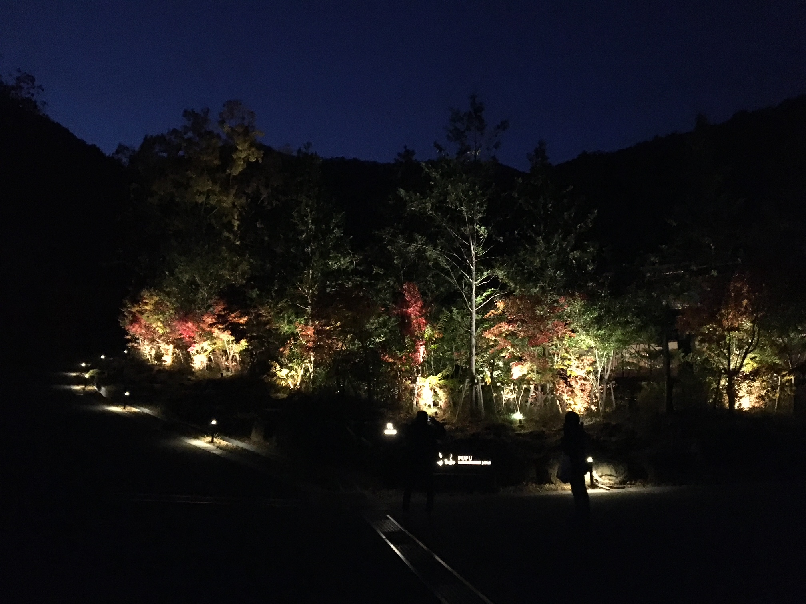